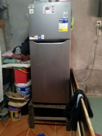
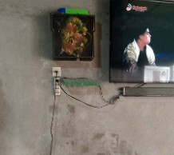
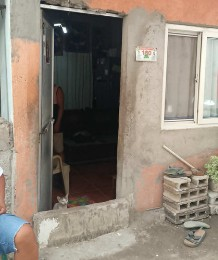

REYNALDO MUNAR
Tulad ng ibang sitio, madalas ding bahain ang Muzon. Umaabot pa nga sa puntong pumapasok ang tubig sa loob ng aming bahay at nilulubog ang sala nang hanggang tuhod. Malaking abala ito, lalo na’t kailangan naming mag-ingat sa kuryente dahil tumatama ang tubig sa mga saksakan. Kapag may dumadaan na sasakyan, bigla ring sumisirit ang tubig papasok sa bahay.

Dahil dito, nagplano akong pataasin ang aming sahig. Marami na ring gamit ang nasira, kaya gumawa ako ng mga paraan: inaangat ko ang mga saksakan, naglagay ng harang sa harap ng bahay, inilipat ang mga gamit sa kuwarto, at gumawa ng mga plataporma para sa mga kasangkapang hindi ko na maakyat gaya ng refrigerator. Marami talagang kailangang ayusin, pati bubong, kaya tuwing umuulan ay naglalagay ako ng mga timba para saluhin ang tumatagas na tubig. Lahat ng naninirahan dito ay ganito rin ang pinagdadaanan.

Sumali ako sa barangay para sa dalawang dahilan: upang makatulong sa mga tao at makatipid sa tulong ng honorarium kapalit ng matinding serbisyo. Madali lamang ang proseso—pumunta ka sa barangay, magtanong sa kapitan o opisyal kung paano maging tanod, at sundin ang mga tagubilin. Boluntaryong trabaho ito, ngunit may kaakibat na panganib lalo na sa tag-ulan. Sa kabutihang-palad, may health center na nagbibigay ng gamot para sa mga minor na pinsala o sugat na natatamo namin.

Sa ngayon, hindi ko pa nakikita ang tunay na ugnayan ng komunidad sa mga frontliner, ngunit hindi ako lubos na nawawalan ng pag-asa. Naniniwala akong darating ang panahon na magkakaroon din ng mas matibay na koneksyon.